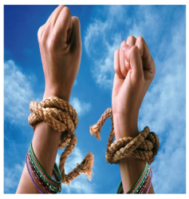

WOMEN EMPOWERMENT
WOMEN EMPOWERMENT
Women's are discriminated from all phases of life starting from their womb to tomb. During all the courses of her life they are deprived of socio-economic and equality in life thereby making their lives miserable. Ensuring women by creating awareness regarding women rights and responsibilities through Education attainment and economic participation which are the key constituents in ensuring the empowerment of women. The overall empowerment of women is crucially dependent on economic development, health, nutrition, agriculture, forestry, etc besides income generation activities which provide dignified and sustainable livelihoods. Through women empowerment programmes VLCT & RC have saved many 1000's of lives from uselessness to usefulness and provides secured shelter and self sustainability to the destitute and deserted women of the society even for the women ready to commit suicide..
AMMA VODI PROGRAMME
"To save the abandoned children"
"The body of a two day-old baby girl was found dumped in a garbage bin" we can find this kind of news in every day dailies, VLCT & RC has come up with a unique idea called "AMMA VODI" the main aim of this program is to create awareness among the society that our Trust is here to take care of the unwanted babies, so don't throw away the babies in to the dustbins instead place the babies in the cradles posted at various highly populated areas. We have saved a many new born babies from the infusion of this project.
ENCARING THE GIRL CHILD IN THE VARIANCIES OF LIFE
"Save the girl child- save the future"
Women were always discriminated from her birth to death. Even a girl birth is not welcomed in most of the families hence we can find many abandoned and thrown away girl babies in the day to day life. VLCT & RC is committed to protect the girl child and ensure that they live in pride for the rest of her life, hence our trust have adopted many girl child approximately 100 to be precise.
FIGHT FOR WOMEN RIGHTS AND PROTECTION
"Striving for equality and social justice for women"
Our trust stands first in fighting for the rights of the women protection as the chairperson herself being women can very well understand the plight of the present situation of women in the society. VLCT & RC strives and thrives for the rights and responsibilities of women and voices in the social equality and social justice. Frequent rallies and awareness programs were conducted for enhancing the women in knowing himself..
SELF EMPLYOMENT & SKILLL DEVELOPMENT TRAINING
"Forming self help groups for self sustainability"
VLCT & RC provides has rescued many 1000's of women from their deprived status of lives and has provide vocational and occupational skills on a large scale sector to make them self reliable and self sustainable. Forming SHG among themselves to create stronger relationships and endure life sustenance through various kinds of activities like PHYNOL making, Tailoring & Embroidery , Saree paintings , and computer skills . A large group of self reliable women are joined into mainstream of live by joining various jobs in and around Nellore
RESCUE AND REHABILITATION OF DESERTED AND DESTITUTE WOMEN
"Self esteemed and social equality"
VLCT & RC focused on girls and women abandoned by parents and relatives, exploited by the society, ex prisoners, helpless widows and even the women involved in trafficking who wants to get rid of the mentally retarded women are admitted into home and provided with an opportunity to correct themselves and lead a happy life. The counseling support extended at the home plays a crucial role in regaining their mental balance and attitude..
RESCUE OF A GIRL CHILD ABUSED BY HER OWN FAMILY
"Giving a new life to a family abused girl"
Narthana, a four years girl was tormented by her own mother and her paramour continuously they wanted to get rid of her as she was growing and started questioning about their illegal relationship. After hearing the news VLCT & RC ran to rescue the girl and as her life was at risk due the severe infection caused by the injuries which needed expensive treatment. Smt. Vasantha Lakshmi has spent lot money and valuable time. She become a God sent mother and fulfills all her requirements..
MARRIAGE FOR DESERTED WOMEN
"Infusing into mainstream of life"
A trafficked orphan victim was rescued by police and through ICDS she was sent to shelter home for shelter and rehabilitation. She settled at the home and undergone vocational training, VLCT & RC have looked at temporary solace and wanted to settle her life on permanent basis so our trust has found one of the employee broad minded and conducted marriage to both of them. Our trust has spent so much money for conducting the marriage ceremony, and played a key role of kind mother to the unfortunate girl..
SNEHITHA HELPLINE FOR WOMEN
"Just one call - saves women from danger"
VLCT & RC ceaseless efforts for protection of women rights are never ending and very much experimental and innovative. Our trust has invented a new technique for helping the girls at risk especially among the college going girls. VLCT & RC has launched a help line number called SNEHITHA (24X7) . Any call by any girl at risk may be attended immediately and instantaneous solutions are provided..
MOTHER AND CHILD HEALTH CARE SERVICES
"Fostering mother and child for a stronger and healthier nation"
Women & Child Welfare is one of the main items in our catalog of our programmes. Mothers with children are invited over awareness meetings, where opportunity is taken to examine babies by qualified doctors and mothers are advised to take necessary precaution on vaccinations and educate them. As a part and parcel of this program mothers were also screened for various ailments and advices given regarding the personal hygiene, prenatal and postnatal care, family planning gender discrimination and girl child protection. Many programs were conducted in the nook and corner of Nellore District..